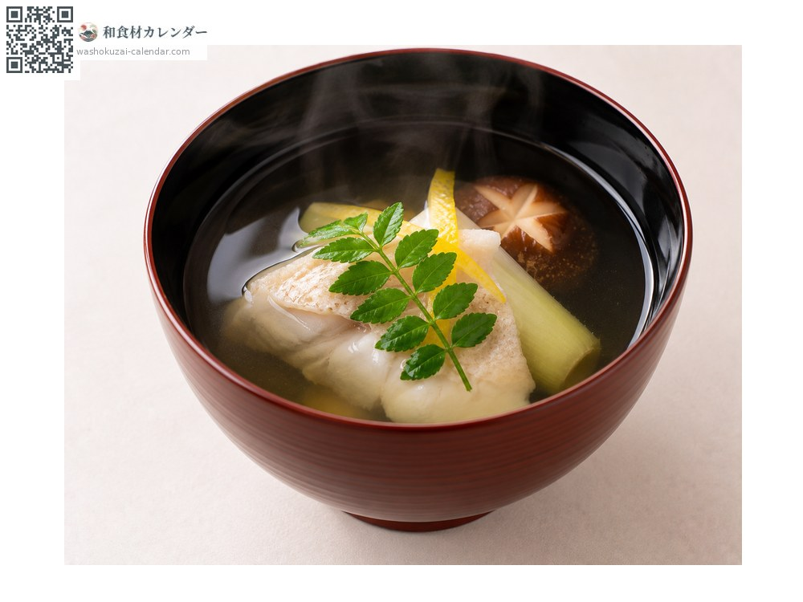
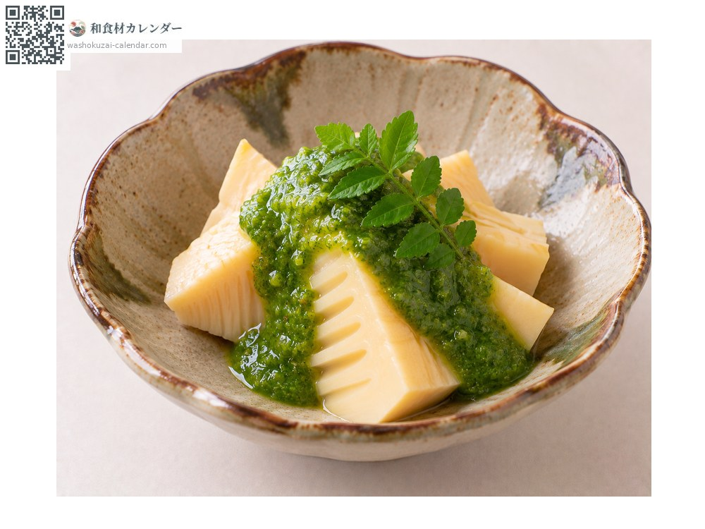
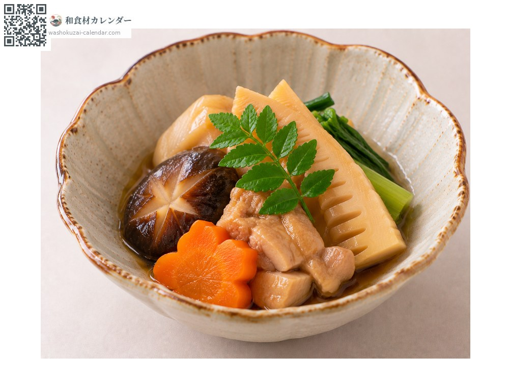

蔬菜
山椒嫩芽（木之芽）
木の芽 きのめ kinome
别名kinome
应季时期为4月、5月、6月

应季时期
1月
2月
3月
4月
5月
6月
7月
8月
9月
10月
11月
12月
应季有供应
烹饪方法

汤品点缀
在手掌上拍一下再放进碗里，香气会散发出来。

木之芽味噌
磨碎拌进味噌，用于竹笋或田乐。

摆盘
放在炖煮或烧烤的料理上，增添色彩与香气。
挑选方法
叶子深绿有光泽、小叶齐整，香气强烈。
保存方法
不耐干燥。用湿纸包好密封冷藏，两到三天内用完。
主要产地
小知识
是山椒的嫩芽。作为声明春天到来的香气，在日本料理中备受重视。使用前在手掌上轻拍一下，香气就会散发出来。与山椒的果实在使用部位和时节上都不同。